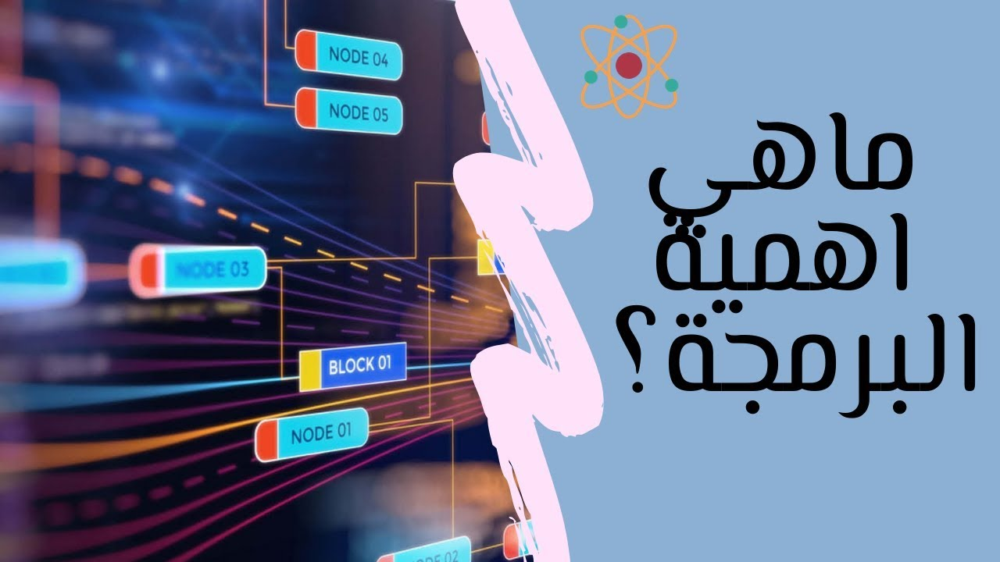
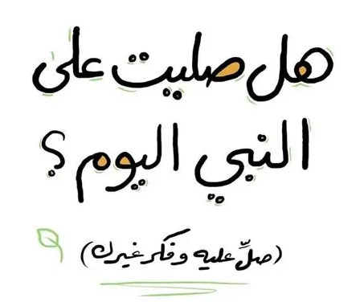

📄 المقالة الثانية: كيف تبدأ في تطوير الويب؟

نبذة :
انت ممكن تسال نفسك "أنا عايز أتعلم أعمل مواقع على الإنترنت،فتسأل نفسك أبدأ منين؟"
، فانت كده بدأت أول خطوة صح. تطوير الويب (أو Web Development)
بقى من أكتر المجالات المطلوبة حاليًا، وكمان ممتع جدًا لو عندك شغف بالتكنولوجيا والتصميم.
طيب يعني إيه "تطوير ويب" أصلاً؟

تطوير الويب يعني إنك تبني مواقع إلكترونية زي اللي بتدخل عليها كل يوم: مواقع أخبار، متاجر، منصات تعليمية، وغيرها.
فيه نوعين من الناس بيشتغلوا في المجال ده:
Front-End Developer:
ده اللي بيصمم شكل الموقع، يعني كل حاجة المستخدم بيشوفها.
Back-End Developer:
ده اللي بيتعامل مع البيانات والسيرفر، يعني اللي بيحصل "ورا الكواليس".ممكن كمان تبقى Full-Stack لو تعلمت الاتنين..
لو حابب تعرف اكتر عن البرمجة
اضغط على الرابط ⏬
نصائح مهمة :
⏬
📄 المقالة الأولى: أهمية تعلم البرمجة


نبذة :
البرمجة بقت من أهم المهارات اللي ممكن أي حد يتعلمها. مش لازم تكون مبرمج محترف ولا تشتغل في شركة تقنية علشان تتعلمها، لكن مجرد إنك تفهم البرمجة هيفرق معاك في حياتك بشكل كبير.
يعني إيه برمجة؟
.jpg)
.jpg)
البرمجة ببساطة هي طريقة بتكلم بيها الكمبيوتر، يعني بتكتب له أوامر علشان ينفّذها . من خلالها تقدر تعمل مواقع، تطبيقات، ألعاب، أو حتى برامج بتحل مشاكل في الشغل أو الحياة.
لو حابب تعرف اكتر عن البرمجة 
اضغط هنا ⏬